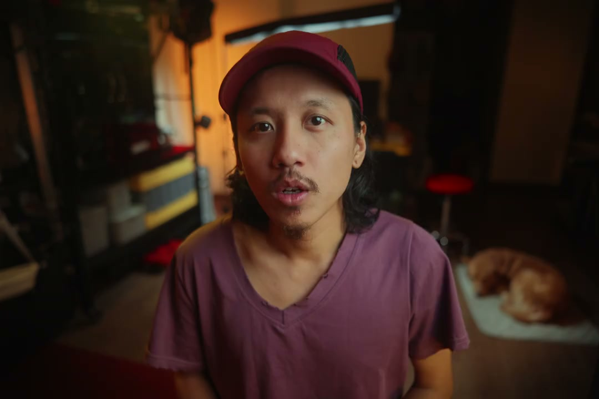
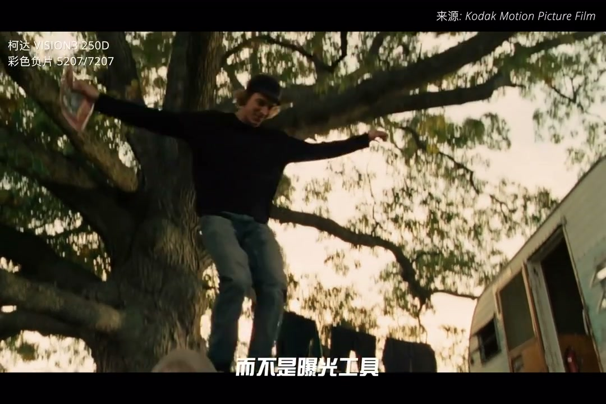
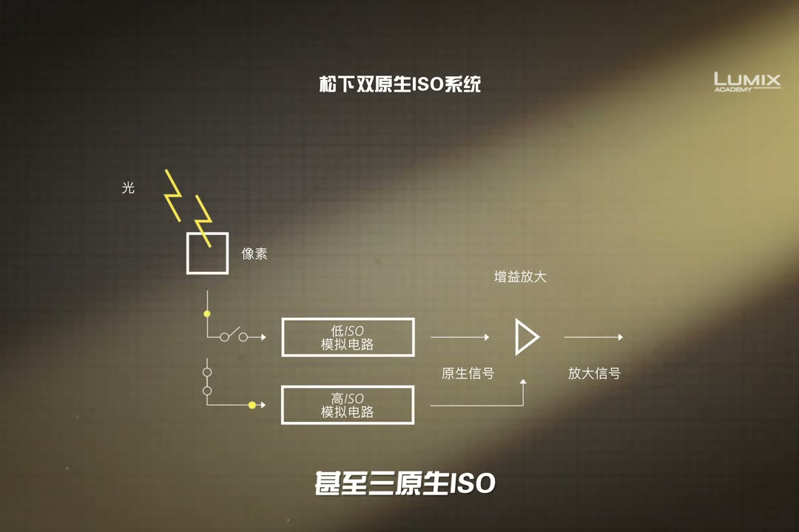

内容要点
这段视频围绕「为什么ISO不能碰？这个习惯要从胶卷说起！」展开，按时间介绍其中的关键环节。光圈快门ISO为何过时了。
拍摄与画面处理
光圈快门ISO为何过时了。只要你不是拍立德或者手机原相机摄影师。必定都逃不过苦学作三座曝光基石。但在2026年。我们默认摄影师必须照片视频双修的年代。直到摄影圣经似乎开始悄悄过时。今天我们来聊聊为何三要素中的ISO已经失效。主要原因是视频拍摄成为了内容生产的主力。视频创作者和传统影视工业者之间的界限已经越来越模糊。而专业的电影人从来不使用曝光三要素

[00:00] 拍摄与画面处理相关画面。
Footage on shooting and image processing.
拍摄与画面处理
也不是无法更换。更换其实也很简单。但是牵扯出的问题太多了。胶片是无法回看的。随意更换胶卷会打乱拍摄的进度表。所以需要多一部严谨的记录。归党管理工作。中途换下未用完的胶卷。也可以不被浪费。记录工作如果稍有疏忽
拍摄与画面处理
不同感光度附有不同的颗粒感。在不同题材。不同情节氛围下选择使用。而色温也同理。回到手里的数码相机。感光度色温可以让用户随意更换。确实很神事。但是电影工业依旧不挑ISO。原因是。现在数码摄影机有个叫做原生感光度的东西

[01:27] 拍摄与画面处理相关画面。
Footage on shooting and image processing.
进阶技巧
白天加一片ND。晚上也不需要过分曝光。Red、索尼、尼康、加能。也默契选择这个挡位作为他们的原生感光度。当然也有导演不遵守这套法则。故意提高感光度去获得高噪点的画面。回到当下自媒体行业卷到飞起。为了维修最好的画质。创作者们也开始默默遵守这套来自电影工业的法则。当下最火热的技术方向是双原生

[02:09] 进阶技巧相关画面。
Footage on advanced techniques.
总结
白天加一片ND。